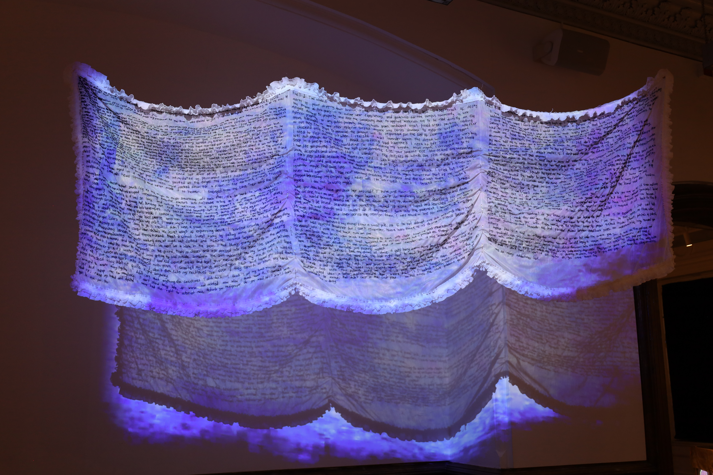
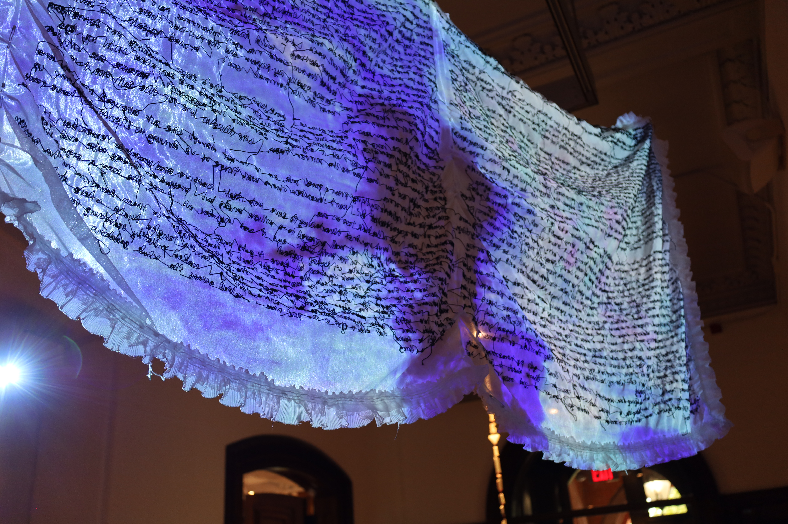

The Whale is a poetic multimedia work that deals in prose that is deliberately opaque and protective of its own words. The work consists of a ten foot triptych of embroidered poetry with video projected through the front, as well as a performance of labor and devotion. The final installation serves as a letter and a shrine, a place of infinity, contemplation, and a sea of language. Something to swim through, something that envelops you, something to exist alongside rather than interpret. Prose washes over you through layers of artifacted colors, degraded and unrecognizable images. The poetry tells the abstracted story of a queer relationship suffering from a fracture that warps and divides time into “before” and “after,” and the act of embroidery serves to physically stitch time back into something continuous. The Whale explores the amount of physical and emotional distance between a reader and the text, dealing with varying degrees of access through the comprehension of the text as well as the physical obscuring of it through color, materiality and light. The installation is an intangible queer body itself and an ode to queer bodies and relationship structures, reclaiming them as sacred through secular frameworks, purging pain into a textile of catharsis, utilizing glitch to construct interpersonal dynamics and identity. The work is highly specific with intentional withholdings, where meaning is found through absence, implication, excess and gesture. The Whale explores what it means to read and “be read,” and what it means to write as a ritual of devotion to being legible, with fabric as skin and words as permanent marks on a formless body.

